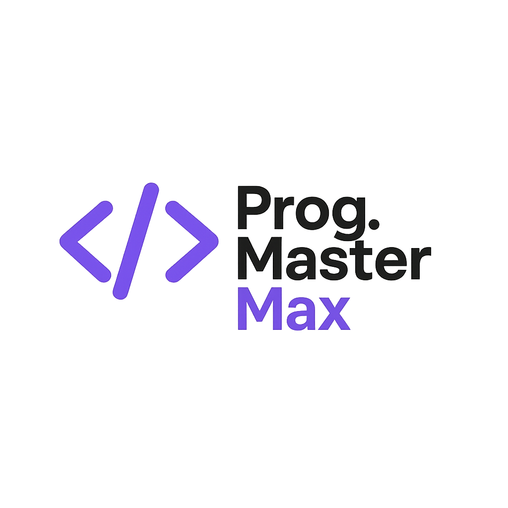

<!DOCTYPE html>
<html lang="pt-BR">
<head>
  <meta charset="UTF-8">
  <meta name="viewport" content="width=device-width, initial-scale=1.0">
  <link rel="icon" type="image/svg+xml" href="favicon.svg">
  <title>Ruby Master - Do Básico ao Avançado</title>
  <link href="https://fonts.googleapis.com/css2?family=Cinzel&family=Open+Sans&display=swap" rel="stylesheet">
  <link href="style.css" rel="stylesheet">
</head>

<body>
    <header class="site-header">
      <div class="header-container">
        <div class="logo-container">
          
          <span class="site-title">ScriptHub 🖤</span>
        </div>
                <nav class="main-nav">
          <a href="loading.html?target=index.html" class="nav-link">Início</a>
          <div class="dropdown">
            <a href="#" class="nav-link dropdown-toggle">Linguagens</a>
            <div class="dropdown-content">
              <a href="loading.html?target=HTML.html">HTML</a>
              <a href="loading.html?target=CSS.html">CSS</a>
              <a href="loading.html?target=JavaScript.html">JavaScript</a>
              <a href="loading.html?target=java.html">Java</a>
              <a href="loading.html?target=python.html">Python</a>
              <a href="loading.html?target=c.html">C</a>
              <a href="loading.html?target=cpp.html">C++</a>
              <a href="loading.html?target=csharp.html">C#</a>
              <a href="loading.html?target=php.html">PHP</a>
              <a href="loading.html?target=ruby.html">Ruby</a>
              <a href="loading.html?target=go.html">Go</a>
              <a href="loading.html?target=swift.html">Swift</a>
            </div>
          </div>
          <a href="loading.html?target=sobre.html" class="nav-link">Análise do Código</a>
        </nav>
        <div class="header-actions">
          <a href="login.html" class="nav-link active">Login</a>
        </div>
      </div>
    </header>
    
  <aside class="barra-lateral">
    <button class="botao-flutuante" onclick="window.location.href='loading.html?target=' + document.referrer.split('/').pop() || 'index.html'" title="Voltar">Voltar</button>
    <button class="barra-toggle" id="barraToggle">||||||</button>
    
    <div class="cartao">
      <h2>Índice Ruby</h2>
      <ul>
        <li>Introdução ao Ruby</li>
        <li>Configuração do Ambiente</li>
        <li>Sintaxe Básica</li>
        <li>Programação Orientada a Objetos</li>
        <li>Blocos e Procs</li>
        <li>Rails Framework</li>
        <li>Gems e Bundler</li>
        <li>Projeto Final</li>
      </ul>
      <a href="#" class="botao">Baixar Guia</a>
    </div>

    <div class="cartao">
      <h2>Recursos Úteis</h2>
      <ul>
        <li>Documentação Oficial</li>
        <li>RubyGems</li>
        <li>Rails</li>
        <li>Comunidade Ruby</li>
        <li>Cheat Sheets</li>
      </ul>
      <a href="#" class="botao">Acessar Links</a>
    </div>

    <div class="cartao">
      
      <h2>RUBY</h2>
      <ul>
        <li>O que é Ruby?</li>
        <li>Elegância</li>
        <li>Produtividade</li>
        <li>Comunidade</li>
        <li>Rails</li>
      </ul>
      <a href="ruby.html" class="botao">Acessar RUBY</a>
    </div>
  </aside>
  
  <main class="conteudo-principal">
    <h1>Ruby Master - Do Zero ao Avançado</h1>

    <div style="display: flex; align-items: center; gap: 20px; flex-wrap: wrap;">
      <div style="flex: 2;">
        <div class="explicacao">
          <div>
            <h3>Aprenda Ruby, a linguagem da elegância e produtividade</h3>
            <h3>Domine desenvolvimento web rápido com o framework Rails</h3>
            <h3>Desenvolvido para quem valoriza código limpo e desenvolvimento ágil</h3>
          </div>
        </div>
      </div>

      <div style="flex: 1; text-align: center;">
        
      </div>
    </div>

    <section class="explicacao">
      <div style="display: flex; align-items: center; gap: 20px; flex-wrap: wrap;">
        <div>
          <h2 class="titulo">O que é Ruby?</h2>
          <p>Ruby é uma linguagem de programação interpretada, orientada a objetos e de script, criada por Yukihiro Matsumoto em 1995. É conhecida por sua sintaxe elegante e foco em produtividade do desenvolvedor.</p>
          
          <p><strong>Características principais:</strong></p>
          <ul>
            <li><strong>Sintaxe Elegante:</strong> Código limpo e fácil de ler</li>
            <li><strong>Orientada a Objetos:</strong> Tudo é um objeto em Ruby</li>
            <li><strong>Dinâmica:</strong> Tipagem dinâmica e flexível</li>
            <li><strong>Rails Framework:</strong> Framework web poderoso e produtivo</li>
            <li><strong>Comunidade Ativa:</strong> Comunidade grande e acolhedora</li>
          </ul>
          
          <p>Ruby é usado em startups, aplicações web, automação e scripts diversos.</p>
        </div>
        
      </div>
    </section>

    <section class="explicacao">
      <h2>Configuração do Ambiente</h2>
      <p>Para programar em Ruby, você precisa instalar Ruby e escolher um editor.</p>
      
      <h3>Passos básicos:</h3>
      <ol>
        <li>Instalar Ruby (via RVM, rbenv ou diretamente)</li>
        <li>Instalar um editor (VS Code, Sublime Text)</li>
        <li>Verificar a instalação</li>
        <li>Criar seu primeiro script</li>
      </ol>

      <h3>Verificando a instalação:</h3>
      <pre><code>ruby --version
gem --version</code></pre>
      
      <div class="secoes">
        <div class="secao">
          <h3>Gerenciadores de Versão</h3>
          <ul>
            <li><strong>RVM:</strong> Ruby Version Manager</li>
            <li><strong>rbenv:</strong> Gerenciador leve de versões</li>
            <li><strong>asdf:</strong> Gerenciador universal</li>
            <li><strong>Instalador Direto:</strong> ruby-lang.org</li>
          </ul>
        </div>
        
        <div class="secao">
          <h3>Editores Recomendados</h3>
          <ul>
            <li>Visual Studio Code</li>
            <li>RubyMine (JetBrains)</li>
            <li>Sublime Text</li>
            <li>Vim/Neovim</li>
          </ul>
        </div>
      </div>
    </section>

    <section class="explicacao">
      <h2>Primeiro Programa em Ruby</h2>
      <p>Vamos criar o programa "Hello World" em Ruby.</p>
      
      <h3>Estrutura básica:</h3>
      <pre><code>puts "Olá, Mundo!"</code></pre>
      
      <h3>Para executar:</h3>
      <pre><code>ruby hello.rb</code></pre>
      
      <div class="secoes">
        <div class="secao">
          <h3>Sintaxe Básica</h3>
          <ul>
            <li><code>puts</code>: Imprime com quebra de linha</li>
            <li><code>print</code>: Imprime sem quebra de linha</li>
            <li><code>p</code>: Imprime com inspeção</li>
            <li><code>#</code>: Comentário</li>
            <li>Sem ponto-e-vírgula necessário</li>
          </ul>
        </div>
        
        <div class="secao">
          <h3>Convenções de Código</h3>
          <ul>
            <li>Nomes de classes: PascalCase (MinhaClasse)</li>
            <li>Nomes de métodos: snake_case (meu_metodo)</li>
            <li>Nomes de variáveis: snake_case (minha_variavel)</li>
            <li>Constantes: UPPER_CASE (MINHA_CONSTANTE)</li>
          </ul>
        </div>
      </div>
    </section>

    <section class="explicacao">
      <h2>Variáveis e Tipos de Dados</h2>
      <p>Ruby possui tipagem dinâmica e suporta vários tipos de dados.</p>
      
      <pre><code>nome = "João"        # String
idade = 25           # Integer
altura = 1.75        # Float
ativo = true         # Boolean
dados = [1, 2, 3]    # Array
pessoa = {           # Hash
  nome: "Maria",
  idade: 30
}</code></pre>
    </section>

    <section class="explicacao">
      <h2>Métodos em Ruby</h2>
      <p>Métodos são funções definidas em Ruby.</p>
      
      <pre><code>def saudacao(nome)
  "Olá, #{nome}!"
end

puts saudacao("Maria")</code></pre>
    </section>

    <section class="explicacao">
      <h2>Blocos e Iteradores</h2>
      <p>Ruby é famoso por seus blocos e iteradores elegantes.</p>
      
      <pre><code>[1, 2, 3, 4, 5].each do |numero|
  puts numero * 2
end

numeros = [1, 2, 3, 4, 5]
pares = numeros.select { |n| n.even? }
dobrados = numeros.map { |n| n * 2 }</code></pre>
    </section>

    <section class="explicacao">
      <h2>Rails - Web Framework</h2>
      <p>Rails é o framework web mais popular para Ruby.</p>
      
      <pre><code">rails new meu_app
cd meu_app
rails generate scaffold Post title:string content:text
rails db:migrate
rails server</code></pre>
    </section>
  </main>

  <script src="script.js"></script>
</body>
</html>
